| Last updated: Exalt Version 5.13.0.0 (June 2025) |
|---|
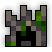 Teleportation Disabled Teleportation Disabled Music: The Shatters Music: The Shatters
|
| Dust Drops | ||
|---|---|---|
| 12-20 20-30 38-50 |
12-18 20-29 38-48 |
12-15 20-28 38-46 |
The Shatters is an extremely dangerous and lengthy dungeon, intended to be approximately the hardest dungeon in the game before Oryx’s Sanctuary, although its difficulty is commonly viewed as surpassing the dungeon in question. This dungeon is one of the Exaltation dungeons, boosting Attack from the second boss and Life and Mana from the third boss.
The dungeon is a source of high-level gear, notably being the only source of T14 alternate weapons and one of two sources of T14 armors. It also drops a large number of powerful Untiered items and the Twilight Archmage ST Set.
Portal to The Shatters drops at guaranteed rate from the Behemoth’s Egg and Avatar of the Forgotten King.
This dungeon must be completed to earn ‘Explosive Journey‘, ‘Conqueror of the Realm‘, ‘Hero of the Nexus’ and ‘Realm of the Mad God’ fame bonuses.
For details pertaining to the version of the dungeon before Exalt Version 2.0.2.0 (Aug 2021), see this page.
| The Realm Eye says: |
|---|

The shattered kingdom was a city-state on an island separate from the realm’s main continent. Like many small kingdoms at the time, it was a monarchy. Although isolated from the mainland, they were known as one of the most powerful kingdoms of their time, simultaneously raising formidable gladiators and making strides in magic research. In truth, even Oryx himself was formerly a champion of this kingdom before his ambitions of conquest consumed him. |
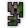 The Shatters Key is available in the Nexus for 200  .
.
The Shatters Guide is currently a work in progress.
The Shatters is a massive, complex dungeon divided into three main areas, each one with its own distinct aesthetic style, enemies, and mechanics. Players must advance through the areas by completing specific objectives in each one, battling a boss at the end of each main area. Info about the areas in question can be found in order below.
Throughout all the areas, nearly every enemy has a chance to instead spawn as a purple Accursed variant of itself. These Accursed variants have visually purple attacks, increased damage, slightly higher DEF, and more aggressive behavior. Instead of dying, they will turn into corrupt graves on death, which will resurrect after a certain amount of time has passed with a sound effect and a visual cue. Accursed enemies do not drop loot upon death.
The Derelict Village follows one of many preset layouts, but they are all made up of several dark forested islands and swamps connected by wooden bridges, surrounded by a sea of Corruption. Flocks of harmless animals which flee from players and blobs of violet sludge (some of which have animals trapped within) can be found scattered around the ground, and dirt paths sprawl throughout the islands. In the center of the islands lie the villages themselves, composed of different building types and decorative structures like statues and farms connected by stone walkways. Two friendly NPCs may be found here: Shunned Prophet Gnarus in a random location, and Transcendant Spana in a church.
Enemies are found in groups scattered throughout the map, with many of them hiding within the forests. Many enemies will remain still until provoked, although some will also patrol around the map. Different enemies may have different aggro ranges and patrol routes. Stone enemies will sometimes be disguised as statues, only activating and turning into the enemy once a player is near the statue for long enough. In addition, the invincible Stone Idol will patrol a specific zone of each map, mercilessly attacking players it encounters.
Players must seek out and destroy 8 switches scattered at random locations throughout the islands. When 7 of the 8 are destroyed, the last one will become highlighted on the minimap as a bright purple dot. Once all eight are destroyed, the drawbridge at the top of the area will be lowered, allowing access to the Great Bridge; all switches will also turn into teleporters that can be used to instantly warp to the bridge, granting players several seconds of invulnerability.
Note: Shatters Mages and Nobles can rarely spawn here.
| 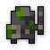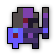 Stone Knight |
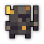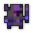 Stone Paladin |
 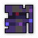 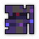Stone Mage |
 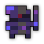 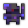Stone Warrior |
| 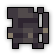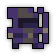 Stone Ranger |
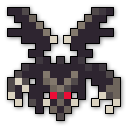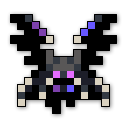 Stone Gargoyle |
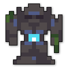 Stone Monolith |
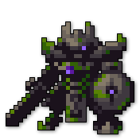 Stone Idol |
Note: Eyes of the King appear uncommonly in both the Village and Castle Areas, and are significantly rarer than all other enemies.
The Great Bridge consists of a large rectangular platform paved with greyish brick and lined with torches which emit orange particles. Four Paladin Obelisks are found in the corners of the platform, and the first boss of the Shatters stands guard at the top.
The entirety of the castle consists of dark stone tiles and torches lining the walls. The hallways are lined by green carpets bordered by crown designs and golden trim.
Players enter the castle through a large, rectangular, grassy courtyard staffed by various enemies and filled to the brim with stone statues, some of which will come to life and attack you as Stone Enemies. The stone walkways feature special green carpets bearing the crest of the Shattered Kingdom. The courtyard terminates in a hallway leading to the Central Chamber, which then splits into four hallways leading to the four castle wings.
In order to progress, players must venture into the castle wings and obtain Untempered Magic to bring back to the Central Chamber. Each wing (and the hall leading up to them) has a total of 7 Magi Conductors scattered within (marked as white dots on the minimap) along with a Source Generator at the end which, when broken, releases the Untempered Magic within and allows the conductors to be activated. Players must then attack the conductors in order to activate them (generating conducting lines between them) and escort the Untempered Magic through the castle wings by using the lines between activated conductors as a pseudo-randomized path. Untempered Magic comes in the following forms:
 Bleeding to all nearby players. This flame is slightly slower than the other flames.
Bleeding to all nearby players. This flame is slightly slower than the other flames. Armor Broken to all nearby players. Unlike the other flames, it moves to the next active conductor regardless of players being nearby. Additionally, it is the fastest of the flames.
Armor Broken to all nearby players. Unlike the other flames, it moves to the next active conductor regardless of players being nearby. Additionally, it is the fastest of the flames.Accursed enemies can “contest” the conductors by standing close to them, causing them to flash red. If a conductor is contested for too long, it will break and sever the pathway, causing the Untempered Magic to slowly shrink before exploding violently and resetting to the beginning of the path. A status message will be broadcasted to the GUI of all players to warn them about a contested conductor.
The four castle wings are chosen from a set of 9 at random, and there will never be more than one of the same wing type in any given castle (outside of rare generation bugs). Only three of the wings must have their Untempered Magic brought to the Central Chamber to activate the boss, meaning one can be skipped entirely. The hallways leading up to the wings are lined with banners that hint at which wing type each one is.
Notes: Hollow Brigands and Outlaws can rarely spawn in any wing. All enemy groups also have a small chance to be replaced by harmless corpses.
Armory
Represented by a green banner with a helmet symbol.
A 3x3 “grid” of medium sized rooms, the corner rooms being circular. The edges of the rooms are cluttered with armor stands, weapon racks, and other training equipment. The Source Generator is found at the very top or bottom.
King’s Knights, Crossbowmen, and Gladiators, which are normally only found in the Grand Hall of the Shatters, can be found early in this wing. The NPC Captain Nycolas may also be found in this wing.
Alchemy Lab
Represented by a blue banner with a conical flask symbol.
A large, vaguely rectangular room with long blue tables, alchemy desks, vials of chemicals, and other alchemical equipment scattered within, along with a window at the top and a strange pool of flowing indigo tiles near the bottom. Many of the tall, cylindrical vials can be attacked and destroyed to produce certain effects depending on their color:
Dining Hall
Represented by a green banner with a bowl symbol.
A large hallway with a long, blue dining table dominating much of the central space, leading up to a circular room with three similar dining tables and the Source Generator found at the end.
Living Quarters
Represented by a blue banner with a crown symbol.
A circular loop of square rooms with hardwood floor and windows along the outer walls. The rooms are decorated with various pieces of furniture such as tables, armor stands, cabinets, and easels with paintings on them.
Lockup
Represented by a green banner with a padlock symbol.
A long rectangular hallway lined with six diamond-shaped prison cells, which are initially found locked. When the Untempered Magic is first freed from the room at the very end, all of the prison cells are opened, allowing the Hollow Prisoners and Madmen within to break loose and attack in droves. Prisoners and Madmen cannot be killed while locked inside their cells.
This is the only location where Hollow Prisoners, Hollow Madmen, and the NPC Dolor the Deranged can be found.
Observatory
Represented by a blue banner with a crescent moon symbol.
A massive circular chamber bordered by flowing indigo tiles. In the center of the chamber is a puzzle consisting of 9 small towers arranged in a grid; the towers are either red or green, and inflict Pet Stasis on proximity. Shooting one of the towers enough will switch its color along with the color of all the adjacent towers.
Unlike the other rooms, the Source Generator in this room will be locked behind a barrier. Solving the puzzle by successfully making every single tower green will unlock the barrier and allow the Untempered Magic to be escorted.
Treasure Keep
Represented by a red banner with a jewel symbol.
A set of 4 medium sized, sequential rooms arranged in a square formation, covered in gilded tiles and littered with decorative treasure chests, gold piles, and other riches. Standing on the piles of loose treasure will slow players standing on it and inflict Unstable until they reach stable ground again. The last room is larger than normal and contains the Source Generator.
The NPC Vagrant Sellsword Ond’ande may be found in this wing.
Cellar
Represented by a red banner with a wine glass symbol.
A large wine cellar roughly shaped like an upside-down U, cluttered with countless crates, barrels, shelves of wine, and alcohol-laden tables.
Study
Represented by a red banner with a book symbol.
A series of rooms with various tables and windows, leading to a small maze of bookshelves. The Source Generator will either be within the maze or on the other side of it. Certain walls of the maze will break in order to clear a path for the Untempered Magic as the Magi-Conductors are linked.
Ice Portal |
Ice Sphere |
Ice Stalagmite |
Fire Portal |
 Fire Bomb |
Untempered Magic |
Hollow Prisoner |
Hollow Madman |
Note: Vagrant Sellsword Ond’ande can also be fought as an enemy if specific conditions arise.
A large, vaguely square room consisting of a central platform bordered by the same green carpets found throughout the castle; the platform is made of stone brick walkways arranged in a plus shape, with the space between the walkways being filled by glassy, flowing indigo tiles. Four inactive Magi-Generators are found in the four quadrants of the central platform, and a mysterious puddle of darkness stirs atop a carpeted, diamond-shaped platform in the very center of the room. Once you bring the Untempered Magic from three of the castle wings to the room, activating three of the Magi-Generators, the previously dormant second boss of The Shatters will awaken.
A large hallway in the castle with eight stone pillars lining the edges, surrounded by a moat of Corruption. The ground is mostly made of cracked stone tiles, and a green carpet bearing the crest of the kingdom extends down the length of the hall, with torches and additional green banners bearing the crest lining the walls. Two inaccessible hallways are present on either side of the hall, where members of the Shatters Royal Guard spawn and enter the hall via bridges to fight players.
The top of the room is initially closed, and the entrance will close after the first objective has been damaged; players must destroy 5 Tablets of the Monarchy that will appear one by one in randomized locations around the hall (except the last two, which appear simultaneously) as the Royal Guards attack, with more and stronger enemies appearing as the Tablets are damaged. The progress of the destroyed Tablets is tracked by a unique UI.
Once 5 Tablets have been destroyed, all Royal Guards will instantly despawn and the way forward will open.
If Vagrant Sellsword Ond’ande and Captain Nycolas have been interacted with in the same run, the entire Grand Hall gauntlet will be replaced with a single miniboss encounter against Ond’ande.
 King’s Knight |
King’s Crossbowman |
King’s Cavalry |
King’s Cavalry Rider |
King’s Thaumaturge |
King’s Gladiator |
A large square room primarily made of smooth brown tiles. The top and the bottom of the room are covered with red carpet lined with ornate tiles, and a T-shaped green carpet divides the room in half; Corruption will flood the outer edge of the room midway through the boss battle. Two thrones are found at the elevated top of the room: a vacant blue one, and a red one upon which sits the final boss of The Shatters.
Red Crystal |
Blue Crystal |
Green Crystal |
Yellow Crystal |
Shade of the King |
Helpless Souls |
Avatar of the Accursed King |
In Exalt Version 2.3.0.0 (Mar 2022), a secret “Hard Mode” was added to the Shatters. This optional mode requires players to undertake a series of hidden tasks and is substantially higher in difficulty, but drops increased loot along with a chance at an exclusive item.
Players must first track down a Void Phantasm that has a decent chance of spawning in the Derelict Village, indicated by a purple torch near the entrance of the dungeon. The Phantasm will initially be highly transparent and very hard to find, but will become opaque and attack. Attacking the Phantasm enough will make it teleport to a new location; doing this 1-2 times will cause it to retreat to the Stone Idol. Defeating the Void Phantasm next to the Stone Idol will cause the Idol to absorb it and turn Accursed, upgrading all its attacks but making it vulnerable to damage.
If the Idol has been defeated, the NPC Duke Poenitet will appear in the Village, and the fight with The Bridge Sentinel will be slightly more difficult. Defeating him will reveal his name as Valen the Unbreakable and prompt new dialog while dropping a second loot bag.
If Valen was defeated, a significantly increased number of the enemies in the Royal Castle spawn as Accursed variants. If there is an Alchemy Lab in the Castle, a hidden wall behind one of the posters will reveal a secret room with a readable lore note and The Source. Destroying The Source will make a fourth Magi-Generator required to activate the boss; if the boss activates while four Generators are active, the Twilight Archmage will become Nox the Wild Shadow and initiate a substantially harder version of the original fight, in exchange for dropping doubled loot bags.
The Grand Hall will be unchanged outside of there being significantly more Accursed spawns, which can be extremely dangerous, especially in smaller groups.
The fight with the Forgotten King is identical up until after all Eyes of the King have been defeated; if the fight with Nox ended with 2 Fire and 2 Ice Generators locked in, The Shattered Queen will spawn instead of the fight proceeding as normal. Players will have to defeat the Shattered Queen - who applies a permanent Sicken effect while alive - to progress the fight, upon which the King reveals his true name as King Azamoth. His dialogue lines are changed and his desperation attack becomes longer and more dangerous, but his fight otherwise remains the same.
Defeating King Azamoth will give the victors two loot bags, but he more importantly drops an exclusive item only obtainable from him - the Chrysalis of Eternity.
The Shatters is part of the Epic Quest pool from The Tinkerer and has one associated quest.
| Name | Description | Items Needed | Reward |
|---|---|---|---|
| The King | Defeat the Forgotten King in the Shatters. |  |
The concept for The Shatters was originally drafted by a player named LordShon in the old Wildshadow forums. The original design was heavily modified by the developers for its release.
This dungeon was added in Release 18.0 (Dec 2013), initially pre-released in Mystery Boxes, which were first implemented in that release. The Shatters replaced the Tomb of the Ancients as the most challenging dungeon in the game at the time before its status was later taken by The Nest in 2017.
For the original Shatters, see The Shatters (Original).
This dungeon was the first to introduce Loot Chests in order for support classes to have a better chance at loot. As of Patch X.32.4.1 (Jan 2020), the chests have been removed, and loot now drops directly from the bosses. The soulbound thresholds are extremely low to compensate.
For years since its release, The Shatters gave a laughable amount of fame (approximately 3) for fully clearing the dungeon, which was a source of disdain from players. As of Patch X.15.0 (June 2017), enemies and bosses in the dungeon give significant amounts of experience, which made this one of the highest-yield dungeons for fame at the time. Since then, better sources of fame such as the Lost Halls were released.
The dungeon portal originally stayed open for 70 seconds, but this was changed to 30 seconds (like most other dungeon portals) in a Patch X.15.0 (June 2017) hotfix to combat a notification exploit.
The dungeon was completely reworked in Exalt Version 2.0.2.0 (Aug 2021), released for Month of the Mad God 2021. The rework was intended to fix longstanding issues with the dungeon, such as the easily “cheesable” bosses, poor quality loot including low drop rates, chaotic layout, and inconsistent aesthetics.
In Exalt Version 2.3.0.0 (Mar 2022), the Shatters got a slowdown update attempting to resolve many players’ complaints about the length of the dungeon. However, a secret hard mode route was added alongside the announced slowdown. This included new NPC’s, guaranteed loot, much harder boss fights, and the Chrysalis of Eternity, a buffed version of The Forgotten Crown. The introduction of new NPC’s and new boss dialogue reveals more about the lore of The Shatters, such as The Forgotten King’s true name, and The Twilight Archmage’s powers.
From Exalt Version 3.1.0.0 (Oct 2022) onwards, the Twilight Archmage now gives a completion for the Attack Exaltation when defeated in order to compensate for people who couldn’t beat The Forgotten King.
Also from Exalt Version 3.1.0.0 (Oct 2022) onwards, The Twilight Gemstone and Chrysalis of Eternity no longer have a minimum 1 drop during hard mode and both gained increases in drop rates. This was done in order to keep players from kicking each other, conspiring, or making exclusionary runs in order to secure their loot.
Before Exalt Version 5.2.0.0 (Oct 2024), The Forgotten King gave an Attack Exalt. This was proposed to be changed to Life and Defense (because of Moonlight Village messing up players’ Mana Exalts and Spectral Penitentiary giving an Attack Exalt), but was instead changed to Life and Mana.
Before Exalt Version 5.11.0.0 (May 2025), dungeon completion gave 166-386  with 60% chance, 81-189
with 60% chance, 81-189  with 50% chance and 52-121
with 50% chance and 52-121  with 40% chance.
with 40% chance.
Before Exalt Version 5.12.0.0 (June 2025), The Bridge Sentinel completion gave 12-20  , 12-18
, 12-18  and 12-15
and 12-15  ; Twilight Archmage completion gave 20-30
; Twilight Archmage completion gave 20-30  , 20-29
, 20-29  and 20-28
and 20-28  ; The Forgotten King completion gave 38-50
; The Forgotten King completion gave 38-50  , 38-48
, 38-48  and 38-46
and 38-46  .
.
Before Exalt Version 5.13.0.0 (June 2025), The Bridge Sentinel completion gave 16-24  , 18-24
, 18-24  and 20-23
and 20-23  ; Twilight Archmage completion gave 23-33
; Twilight Archmage completion gave 23-33  , 28-37
, 28-37  and 30-38
and 30-38  ; The Forgotten King completion gave 41-55
; The Forgotten King completion gave 41-55  , 50-60
, 50-60  and 54-66
and 54-66  .
.


{kind=link}
{kind=link}
{kind=link}
{kind=link}
{kind=link}